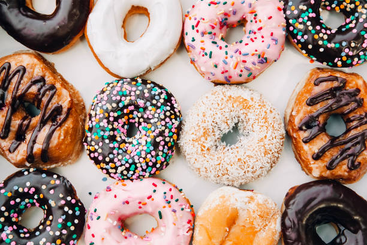
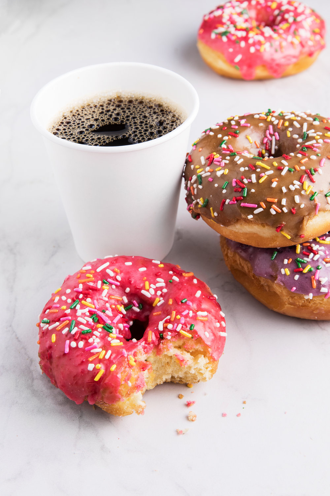

Come see our Central Ave location and try our best sellers -
111 Central Ave
Saint Petersburg
You bacon me crazy
Donut say no to me
Late night jam session
Help keep St. Pete Local and come out for our spring appreciation week.
Buy a coffee and donut and the next one is on us!
Visit keep St Pete local.

Events Forthcoming:
Go Out in a Glaze of Glory 10k: On March 30th, The Donut Shop is
partnering with
Run for Brews
for the sweetest running experience! Run a 10k and stop to eat a dozen
donuts halfway! Top 3 finishers win a free dozen donuts each week for
the remainder of 2020.
Holy No More: Golfer with the longest drive wins a Donut Shop tee and 3
dozen donuts of their choice at our golf challenge. The Donut Shop is
sponsoring a longest drive challenge at
Top Golf!